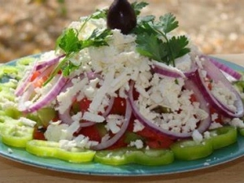
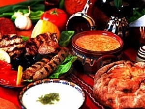
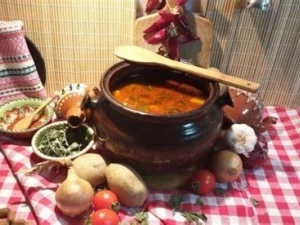
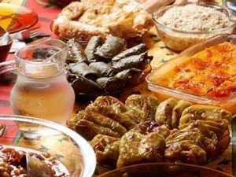
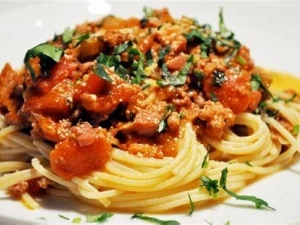
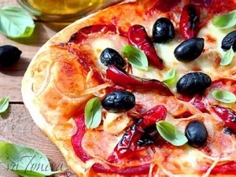
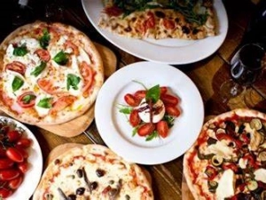

Българска кухня
Българската кухня е условно понятие, с което се подразбират традиционните български ястия и модерните приноси, заимствани отвън. Най-общо под понятието „българска кухня“ се разбира основният комплект от ястия и съставки, които присъстват в бита на българския народ. Едни от най-характерните продукти, използвани в българската кухня са бялото саламурено сирене и киселото мляко.
Рецептите са формирани в продължение на векове, с традиции в овкусяването и изградени методи и техники за приготвяне, представляващи синтез от европейската и азиатската кухня.
Една от характерните особености на българската кухня е, че повечето продукти в едно ястие се обработват топлинно едновременно. Това важи особено при печивата и обяснението е просто – в миналото домакинствата почти не са имали собствени фурни, а са отнасяли подготвеното за печене ястие в обществени фурни. Дори с навлизането на модерните технологии след края на Втората световна война, тази традиция на приготвяне се запазва в голяма степен, до края на осемдесетте години на миналия век. Друга характерна особеност е включването на много пресни или консервирани зеленчуци, които се обработват едновременно с месото.
Силна, в сравнение с други кухни, е употребата на пикантни подправки като лук, чесън, червен и чер пипер, бахар и дафинов лист. Много се употребяват силни аромати и ароматни комбинации с джоджен, босилек, розмарин, сминдух (понякога неприемливи за вкусовете на консуматори извън региона).
  
Италианска кухня
Италианската кухня е израз на кулинарното изкуство, развито в Италия, което включва силно вкоренени традиции, общи за цялата страна, както и съвкупност от всички регионални гастрономически традиции, като двете са в непрестанен обмен: много италиански ястия, които някога са били известни само в регионите им на произход, с времето се разпространяват в цялата страна.
Известна е като класически пример за Средиземноморската диета и е призната като част от Нематериалното наследство на човечеството от ЮНЕСКО през 2010 г. Освен това е една от най-известните и най-ценени гастрономии в световен мащаб. Италианската кухня е в основата на оборот от над 200 милиарда евро.
Една от основните характеристики на италианската кухня е нейната простота, с много ястия, съставени от малко съставки: италианските готвачи разчитат на качеството на съставките, а не на сложността на приготвянето.
Най-популярните ястия и рецепти през вековете често са били създавани по-скоро от баби, отколкото от майсторски готвачи и затова много италиански рецепти са подходящи за домашно и всекидневно приготвяне, зачитайки териториалните специфики, като се дава предимство само на суровините и съставките на региона, на произхода на ястието и на запазването на неговата сезонност.
 